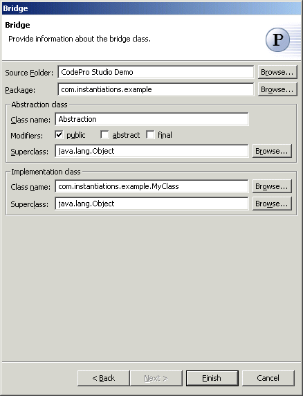

Bridge Pattern
Also known as: Handle/Body
The  Bridge Pattern decouples an abstraction from its implementation so that the two can vary
independently. When an abstraction can have one of several possible implementations, the
usual way to accommodate them is to use inheritance. An abstract class defines the
interface to the abstraction, and concrete subclasses implement it in different ways. But
this approach isn't always flexible enough. Inheritance binds an implementation to the
abstraction permanently, which makes it difficult to modify, extend, and reuse
abstractions and implementations independently.
Bridge Pattern decouples an abstraction from its implementation so that the two can vary
independently. When an abstraction can have one of several possible implementations, the
usual way to accommodate them is to use inheritance. An abstract class defines the
interface to the abstraction, and concrete subclasses implement it in different ways. But
this approach isn't always flexible enough. Inheritance binds an implementation to the
abstraction permanently, which makes it difficult to modify, extend, and reuse
abstractions and implementations independently.
Wizard

| Option | Description | Default |
| Source folder | Enter a source folder for the new class. Either type a valid source folder path or click Browse to select a source folder via a dialog. | The source folder of the element that was selected when the wizard was started. |
| Package | Enter a package to contain the new class. Either type a valid package name or click Browse to select a package via a dialog. | The package of the element that was selected when the wizard was started. |
| Abstraction class name | Type a name for the new abstraction class. | <Abstraction> |
| Modifiers | Select one or more access modifiers for the new class.
|
public |
| Superclass | Type or click Browse to select a superclass for the abstraction class. | <java.lang.Object> |
| Implementation class | Type or click Browse to select the class to be used as the implementation class | The type or the primary type of the compilation unit that was selected when the wizard was started |
| Superclass | Type or click Browse to select a superclass for the implementation class. | <java.lang.Object> |
Applicability
Use the Bridge pattern when
- you want to avoid a permanent binding between an abstraction and its implementation.
This might be the case, for example, when the implementation must be selected or switched
at run-time.
- both the abstractions and their implementations should be extensible by subclassing. In
this case, the Bridge pattern lets you combine the different abstractions and
implementations and extend them independently.
- changes in the implementation of an abstraction should have no impact on clients; that
is, their code should not have to be recompiled.
- you have a proliferation of classes. Such a class hierarchy indicates the need for
splitting an object into two parts.
- you want to share an implementation among multiple objects (perhaps using reference counting), and this fact should be hidden from the client.
Additional Resources
http://c2.com/cgi/wiki?BridgePattern
http://www.wikipedia.org/wiki/Bridge_pattern
http://www.cmcrossroads.com/bradapp/javapats.html#Bridge
http://www.dofactory.com/patterns/pattern_bridge.asp
http://www.agcs.com/supportv2/techpapers/patterns/papers/tutnotes/sld009.htm